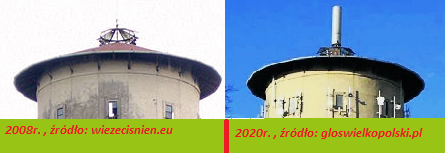

Pleszew Nocą

INFORMACJE I WSTĘP

Wszyscy dobrze wiemy, z jakimi problemami w ostatnich latach mierzy się Pleszew. W tym miejscu życie toczy się zupełnie inaczej, a oś czasu się tu nieregularnie zakrzywia. Tymczasem mieszkańcy muszą chronić swoich domostw, wydając coraz to większe sumy na wszelki sprzęt antywłamaniowy, czy zapobiegający wchodzenia do nich promieniowania. A rząd milczy - brak dofinansowań, czy możliwości zmiany miejsca zamieszkania. Pleszew otoczony jest murami i sufitem, wchłaniającymi promieniowanie i zapobiegającymi przedostania się nowych organizmów do dalszych części kraju i świata. Wielu próbowało stąd uciec, poprzez wykonanie podkopu, lecz metr pod ziemią poprowadzono zmodyfikowany prąd przez nią przepływający. Nie każdy wie jednak, gdzie ta historia odnajduje swój początek, ja jednak dobrze pamiętam. W 2020 roku w słoneczny wiosenny dzień udałem się na spacer. Gdy szedłem ul. Marszewską, zauważyłem, że na dachu Wieży Ciśnień znajduje się coś, czego dotychczas tam nie było, a mianowicie: jakiś metalowy element, jakby rura? Dłużej się nie zastanawiając dokończyłem spacer, po czym postanowiłem wrócić do domu. Lata biegły, a wieża się ani trochę nie zmieniała. Pewnego dnia - w nowy rok, 1. stycznia 2036r. mój kolega podczas spaceru chciał sfotografować padający śnieg nieopodal Wieży Ciśnień, na filmie jednak dostrzegł to, czego niczyje oczy nie ostrzegły. Z tej "rury" biegły okrągłe, zielone promienie. W następnych godzinach mieszkańcy skarżyli się na ból głowy. Z biegiem czasu teren wokół wieży w obiektywach aparatów, kamer i telefonów komórkowych stawał się coraz mniej znajomy, tymczasem naturalna percepcja wzrokowa odbierała go tak, jak przedtem. Pod wieczór na słupach latarnii rozwieszono kamery, rejestrujące niematerialne zmiany środowiska, które z każdym dniem stawały się coraz bardziej odczuwalne w zdrowiu fizycznym mieszkańców, a z każdym tygodniem anomalie stawały się coraz bardziej namacalne.